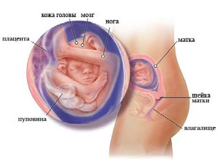
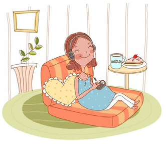

17 неделя беременности

С 17 недели беременности стартует пятый месяц беременности. Благоприятный период, не омрачённый какими-то негативными ощущениями. Но некоторые изменения вы всё же ощутите: возможно, это будет кровоточивость дёсен, усиленное потоотделение или обильные влагалищные выделения.
Длина малыша: 12 см.
Вес малыша: 100 г.
Вены, которые хорошо виднелись через кожу малыша, теперь становятся менее заметными ввиду начала формирования жирового слоя. Хотя вкусовые сосочки у него сформировались уже довольно давно, только сейчас ребенок начинает по-настоящему различать вкусы. Меконий (первый кал, который выйдет из ребенка после его рождения) начинает накапливаться в кишечнике маленького.
Малыш уже достаточно велик, чтобы поместиться у вас на ладони, соответствуя по своему размеру апельсину.
Мозг малыша постоянно взаимодействует с нервной и мышечной системой. Ребенок начинает координировать свои движения: имеет маленький ротик и начинает сосать палец, благодаря чему заглатывает немного околоплодных вод, которые способствуют нормальному функционированию пищеварительной и выделительной систем. Начинает свое формирование жировая прослойка, которая способствует накоплению жировых запасов, и принимает непосредственное участие в процессе обмена веществ.
В виду того, что иммунная система малыша заканчивает свое формирование, его организм начинает синтезировать иммуноглобулин и интерферон, которые защищают кроху от различных инфекций, в том числе и от маминых.
С этой недели у ребенка начинает появляться родовая смазка для того, чтобы во время родов защитить его нежную кожу.
У малыша улучшается слух. В частности, он уже реагирует на громкие шумы, возникающие поблизости.
Внутриутробное развитие плода на 17 неделе беременности
ВАШ ОРГАНИЗМ
Женщина на 17 неделе беременности прибавила около 2,5-4,5 кг в весе, ее живот стал больше, вследствие чего центр тяжести сместился и женщина может стать немного неповоротливой. Такие ощущения радуют маму – она уже привыкла к своему малышу и ждет не дождется его появления.
Объем крови увеличивается на 500 мл, а сердце будущей мамы, в связи с увеличившейся на 40% нагрузкой, начинает работать быстрее, из-за чего может развиться небольшое носовое кровотечение. Начинаются боли в спине, ногах и стопах. Но все эти моменты сглаживаются, когда ощущаются шевеления малыша.
Ваша грудь продолжает увеличиваться, и на ней могут появиться растяжки. Если на вашем животе до сих пор не было темной линии, она может появиться теперь. Если же она присутствовала, то теперь, скорее всего, начнет приобретать еще более темный окрас. Темная линия исчезнет после рождения ребенка.
ЗДОРОВЫЕ СОВЕТЫ
Притом, что уровень комфорта для вас в целом, возможно, понижается, теперь вы и ваш партнер в состоянии почувствовать движения малыша. Это прекрасный повод лечь, прижавшись к партнеру, и позволить ему положить обе руки вам на живот. Старайтесь больше отдыхать и высыпаться за ночь. Не забывайте о здоровом рационе – вашему малышу необходимы всевозможные питательные вещества.
Во время поездки в автомобиле не забывайте пристегиваться ремнем безопасности. Многие женщины во время беременности считают, что препараты, которые отпускают в аптеках без рецепта, являются абсолютно безопасными, но это не так. Лекарства, даже если они отпускаются без рецепта, могут причинить непоправимый вред здоровью малыша. Прежде, чем приобретать что-то в аптеке, необходимо проконсультироваться у врача-гинеколога.
Если женщина отдает предпочтение туфлям на высоком каблуке, то на этом сроке придется от них отказаться, т.к. они могут стать причиной травмы брюшной полости при падении и оказывают излишнюю нагрузку на ноги.
Те женщины, которые не отказались от вредной привычки курения, причиняют вред не только своему здоровью, но и здоровью крохи. Новорожденные, которые рождаются у курящих мам, часто имеют низкий вес, у некоторых появляются такие патологии, как заячья губа или волчья пасть. У женщин, которые курят, повышается опасность преждевременных родов.
В связи с тем, что живот стал больше и нагрузка на ноги возросла, в конце дня вы можете обнаружить, что ваши ноги отекли. При первой возможности беременная женщина должна стараться отдыхать и не подвергать ноги большим нагрузкам.
Если у вас сильно болят ноги, вам необходимо придерживаться следующих рекомендаций: если размер ноги увеличился, то необходимо купить комфортную обувь без каблука на размер больше. Если есть возможность, то как можно меньше нужно стоять. Перед сном стоит опускать отекшие ноги в прохладную воду, отдавать предпочтение носкам из натурального хлопка.
Можно начинать слушать мелодичную музыку, читать вслух добрые сказки для гармоничного развития малыша.
 16 неделя 18 неделя